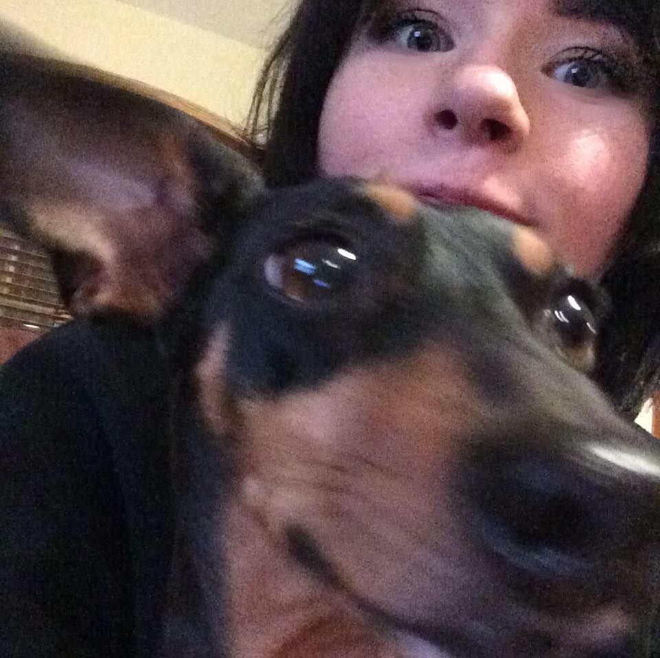

Who's The Rachel Behind The Curtain
 My name is Rachel Stumme and I am currently living in North Carolina. In this wonderful state I have really started to come into my element. I learned that I love to craft. I’ve taught myself how to sew and bind leather books, whittle things, and wood burn designs. My newest crafting passion is cosplay.
I am not a naturally frugal person, but I have been approaching cosplay with a frugal mindset. It is typically an expensive hobby, but I enjoy the challenge of making it wallet friendly. My current project is a Tracer cosplay. She is a character from my all time favorite video game, Overwatch.
Besides crafting I have many other things I am passionate about. I love digital art and have been a self-taught artist since I was a kid. The piles of drawing and files of drawings will never stop growing in my house. I also adore my fur baby, Hattie. I left my dog outside one day, hoping for some puppies to come into my life. I was blessed with the most wonderful dachshund mutt and she is my constant companion and friend.
My life goal is to be happy. Over my short years I have come to realize what that means for me. Someday I hope to be a freelance graphic artist and to live near some mountains with my family, where we will be safe from the aliens when they come for us(kidding).
Message Me!
By Rachel Stumme